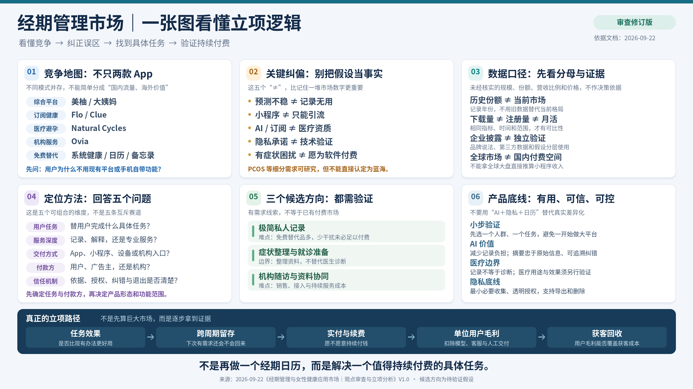
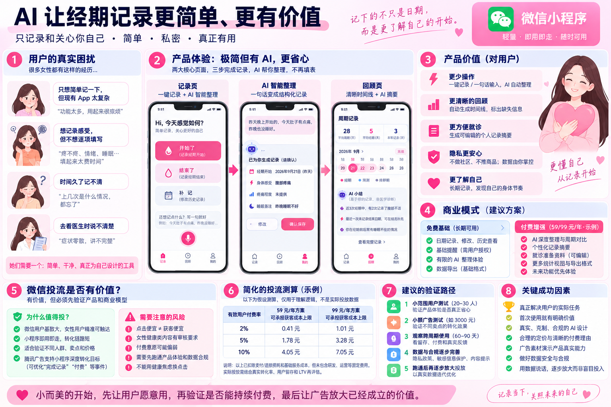
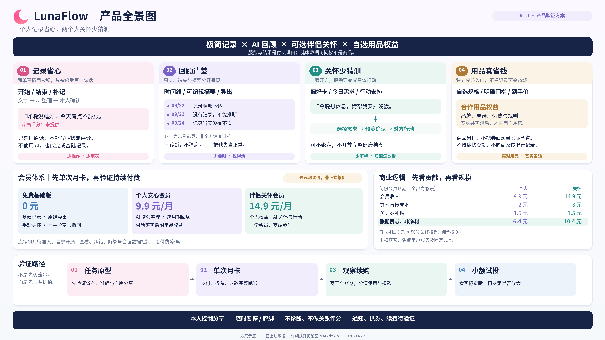
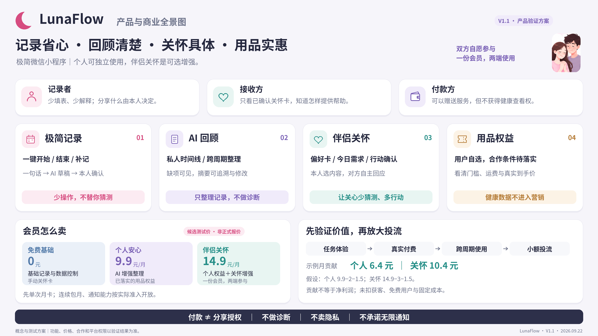
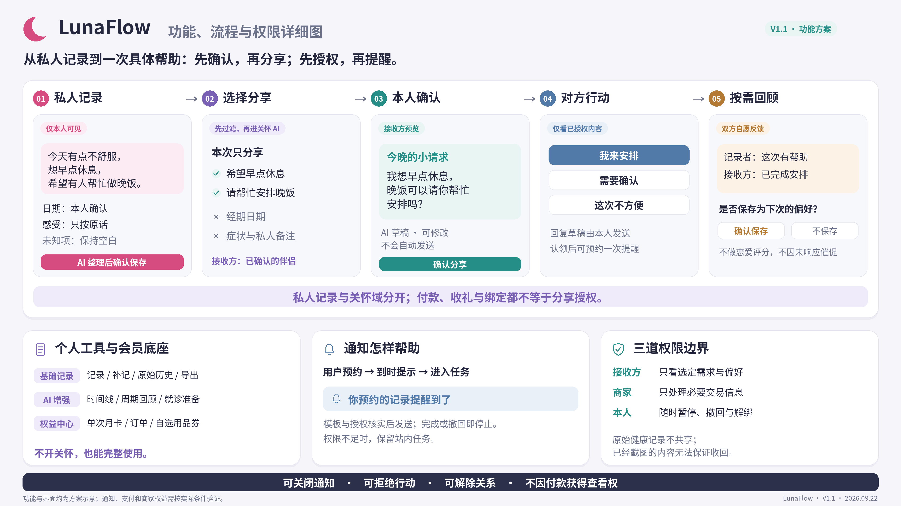
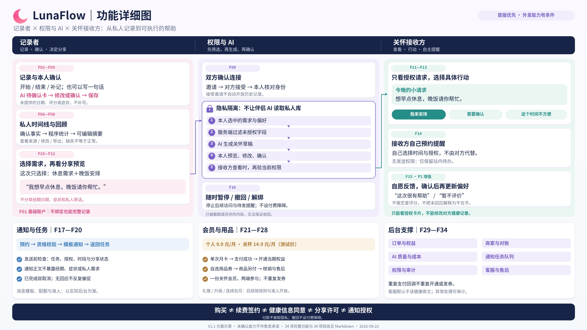

·LunaFlow
女性经期智能管理
/
Smart Menstrual Care
以经期管理为入口
为女性健康构建
DATA · CARE · COMMERCE
一个融合 数据记录 · 健康关怀 · 商业服务
的女性全周期健康小程序
01
数据记录
智能预测经期 · 排卵期
症状与情绪多维日志
症状与情绪多维日志
02
健康关怀
科普内容 · 医生问答
私密社区 · 情绪陪伴
私密社区 · 情绪陪伴
03
验证路径
免费基础 · 9.9 元月卡 · 自愿连续包月
用品券自选 · 通知 + AI 整理
用品券自选 · 通知 + AI 整理
帮助她们
记录 · 理解 · 照顾自己
LUNAFLOW · 01 · 封面
PART 02 · MARKET & PAINPOINTS
女性健康市场 · 未被解决的痛点
万亿赛道 · 工具型产品缺位 · 情绪价值长期被忽视
¥ 1.0 万亿口径
WOMEN HEALTH · 行业经济规模
WEF/BCG 估算·女性健康差距年度经济成本;非女性健康 APP 市场规模
"她不是不需要被照顾
只是 没人为她设计"
只是 没人为她设计"
据 WEF/BCG 估算，女性健康差距每年带来约 1 万亿美元的全球生产力损失；
主流经期管理 App 的核心记录功能已普及，但在症状整理、隐私保护、医疗衔接等深层任务上完成度参差。
女性从青春期到围绝经期的 40+ 年，都面对周期管理的反复需求。
其中 30%–40% 受经前综合征(PMS)显著影响，但情绪波动为个体差异，不宜作为性别差异的通用结论。
· 1T 美元为经济成本估算(WEF/BCG)，非 APP 市场规模；后者约 48.6 亿美元(2026 年，BRI 估算)
· "拼凑感"系研究印象，非逐款实测结论；不同应用/系统工具的能力差异显著
· 3 倍情绪波动数字已删除(详见 §2.6)
3.6 亿来源
中国育龄女性(15–49 岁)
国家统计局·2023；本数字为人群规模，不等同于付费市场
~40 年
女性经期管理周期(青春期–围绝经期)
·"7.2 年"未在审查文档可证据链中找到；予以删除，避免无来源数字进入 BP
30–40 %待验证
受经前综合征(PMS)显著影响
·"80%"未注明具体研究，样本与定义不明；改用 PMS 比例作为更可验证的近似值
📊
记录维度单一
主流工具侧重"日期 + 流量"；情绪/症状/睡眠等结构化记录易中断；中断后回顾也困难
🔮
非规律周期预测
基于"28 天固定周期"的预测对 21–35 天波动范围的多样性不友好，需个体化模型验证
💬
交流与问诊意愿假设
用户对私密交流与医生通道的接受度，是待验证需求，非已证实现状
🛒
按周期推荐
将卫生用品推荐与周期阶段匹配，作为商业化候选路径；实际需求与复购意愿需用户访谈验证
🩺
就诊资料整理
对 PCOS/痛经/更年期人群，价值不仅在预测，更在症状时间线整理与就诊摘要导出；数据接入需用户授权
⏰
提醒缺位
用户想被提醒记日期、记症状、准备就诊，但当前工具不做主动触达；每天打卡又太累
LUNAFLOW · MARKET
"工具已经普及，深层任务仍待完成 — 但商业价值需小额验证，不能先预设投流"
02 / 12 · PAINPOINTS
数据使用说明：
① 本页数字均标注口径与来源；
② 1T 美元为 WEF/BCG 估算的"经济成本"，非 APP 市场规模(后者 ~48.6 亿美元，BRI 估算)；
③ "3 倍 情绪波动"等无证据数字已删除；
④ 详情见 经期管理与女性健康应用市场_观点审查与立项分析_2026-09-22.md §11。
PART 03 · PRODUCT
LunaFlow 产品 · 数据驱动的关怀
智能记录 + 精准预测 + 健康关怀 + 商业服务 · 四大模块
4 模块
PRODUCT PILLARS
CORE VALUE
通知让你想起来
AI 让你这次回来更值得
LunaFlow 不是经期记录器，而是基于个体多维日志的全周期伙伴。 通过症状-情绪-体征多维记录，把每月「被动应对」变成「主动规划」。 AI 模型将以任务改善（对话式记录 / 摘要可追溯 / 错误可纠正）为核心评价标准，而非标签承诺。
· "10 万+ 用户训练"在立项阶段无证据支撑，予以删除
· AI 任务边界见审查文档 §9.2：不猜测未提供的日期/症状/用药；不把"相关"写成"病因"；不编造检查结论
📅
智能记录
DAILY
3 秒打卡 · 经期/症状/情绪/用药/睡眠 5 维记录
🤖
个体化预测待验证
AI
基于个体多维日志的周期模型 · 准确率以临床测试为准 · 不替代避孕/诊断
💡
健康科普
CONTENT
PMS/PCOS/更年期等内容 · 医生资质、来源与更新频率以版本记录为准 · 不替代个体诊疗
⏰
主动预约用户驱动
SCHEDULE
用户选择时间 → 系统按预约提醒一次 · 不做每日推送 · 不做无限连续提醒
🔔
通知服务短文案·低暴露
NOTIFY
简短文案 · 不展示健康细节 · 点开直达记录页 · 用户可关闭 · 不混用健康与商业
✏️
一句话整理AI 辅助
DRAFT
写一句自动整理为可确认记录卡 · 不猜测未提供字段 · 用户可不用 AI
📊
个人回顾三阶段能力
REVIEW
① 检查完整 ② 整理变化（不解释因果） ③ 帮用户完成下一件事 · 不下诊断 · 可追溯原始
🩺
就诊准备用户触发
VISIT
用户主动设置 → 选择记录范围 → 形成可编辑可分享的就诊摘要 · 不替代医生 · 不下诊断
LUNAFLOW · PRODUCT
"好的通知让她每次回来，都少忘一件事、少填几项"
03 / 12 · PRODUCT
PART 04 · VALIDATION PATH
商业模式 · 先验证，再放大
付费设计 · 单位经济压力测试 · 五阶段验证 · 决策与暂停条件
3 阶段
VALIDATION PHASES
PRICING
免费基础 +
9.9 元月卡 · 自愿连续包月
极简记录让用户愿意开始，AI 整理减少实际负担，
可信的历史记录让用户回来，自愿付费 + 真实省钱证明商业价值。
先做单次月卡，再开放自愿连续包月，最后小额投流。
免费基础
RELIABLE · 可靠记录
日期记录 · 修改 · 历史查看 · 基础导出 · 权限范围内的提醒 · 有限的 AI 整理（用于首日体验）
交付：可靠地把信息记下来
付费增强
9.9 元/月 · 月卡（测试价格）
AI 增强整理 · 跨周期对比 · 可编辑的就诊准备资料 ·
每账期自选一张合作商家用品券（用户主动领取）
交付：少整理 · 少遗漏 · 用品省钱 · 需要时容易说清楚
⚠️查阅 · 纠错 · 注销 · 数据删除 不应被设计成会员特权；不能靠提高迁移难度制造留存。
⚠️自动续费须明确授权；"签约成功" ≠ "扣款成功"，不得仅凭签约认定当期会员已付款。
⚠️券面额 ≠ 实际省钱；判断标准是同款商品可实际买到的含运费到手价。
⚠️广告归因不携带健康内容；仅账号标识加购买事件也需评估敏感性。
单位经济 · 压力测试
[非已验证，仅为示例贡献]
| 情景 | 平台补贴 / 张 |
核销率 | 每位会员 月贡献 |
|---|---|---|---|
| 基础示例 | 3 元 | 50% | 6.4 元 |
| 全部使用 | 3 元 | 100% | 4.9 元 |
| 高补贴 + 全用 | 10 元 | 100% | −2.1 元 |
公式：9.9 − 2 − 补贴 × 核销率 = 月贡献（9.9 元月费 − 2 元直接成本 − 平台期望补贴）。
不依赖用户忘记领券或忘记取消；模型应在用户积极使用权益时仍成立。
按付费队列观察：队列贡献 = 实收会员 + 已结算佣金 − 直接服务 − 权益补贴 − 广告获客，不把一次付费乘以假定的无限续费月份。
未覆盖：获客、研发、合规、固定人员等费用。
阶段 1~20–30 人
落实真实权益 + 验证任务
先与少量商家谈清优惠、库存、结算、退款与售后；用真实商品下单验证同款到手价。
工具部分：找目标用户对比"普通按钮 vs AI 一句话整理"，观察能否独立完成、是否愿意下次继续用。
新增：通知机制 A/B 测试 — 比较"普通提醒 vs AI 整理后回顾"两组，看是否真的降低记录负担。
DISCOVERY · 探索样本 + 商家供券真实化 + 通知形式
权益 · 任务 · 通知
¥3000广告上限
单次月卡 → 重复价值 → 自愿连续包月
先做单次月卡（不默认连续包月）；观察 2-3 个账期的实付、领券与核销数据。
在支付权限与续费流程全部跑通后，开放主动签约的连续包月，区分主动续购与自动续费群组。
最后小额投流：固定主要人群 · 产品版本 · 价格；只换素材。
PAYMENT · 队列贡献观察（非单次乘以续费月数）
付费 · 续费 · 投流
60–90天
验证跨账期留存
订阅账期与月经周期分别统计。周期不规律者按真实任务发生统计，不强按 28 天算流失。
关注：工具记录是否继续 / 用户是否主动续购 / 券实际节省 / 当期队列贡献。
区分三种行为：回来继续记录 / 回来修改错误 / 仅被提醒后点开。
RETENTION · 跨账期窗口
留存 · 贡献
→ 决策
四种结果，四种动作
A
点击不错，但很少完成真实记录 → 优先修改承诺与首屏，暂停扩大投放
B
使用与回访不错，但付费很弱 → 继续验证收费价值，不靠买量扩大免费服务成本
C
有真实付费，但 CAC 持续高于上限 → 优化渠道/转化/价值，不假设续费弥补
D
多批用户持续使用，扣除成本后仍有余量，审核与数据处理稳定 → 才考虑逐步扩大预算
!
应立即暂停扩大投放：券后价与公开渠道无优势 / 首月便宜次月无同等权益 / 用户只领券不用工具 / 较多用户不知道在自动扣款 / 支付权限·退款·隐私方案未跑通 / 通知被频繁关闭或投诉骚扰 / AI 整理被发现虚构而非"标注缺失"
付费广告带来的用户要单独计算，不要把自然流量、朋友推荐和原有用户回流混进去。
LUNAFLOW · VALIDATION
"卖「省心 + 真实省钱」，不是卖「自动扣款的资格」"
04 / 12 · VALIDATION
PART 05 · MARKET & REPORTS
女性健康市场容量 · 研报数据全景
NAS+OCR 抓取中 · 数据加载完成后自动更新
0 / 份研报
MARKET REPORTS
-- 加载中
关键指标 1NAS+OCR 完成后填充
-- 加载中
关键指标 2NAS+OCR 完成后填充
-- 加载中
关键指标 3NAS+OCR 完成后填充
-- 加载中
关键指标 4NAS+OCR 完成后填充
-- 加载中
关键指标 5NAS+OCR 完成后填充
精选研报
点击卡片 → 加载 PDF 预览
💡
行业共识：
数据加载完成后由 build_cover_manifest.js 注入行业结论（参考 buying cover.html 同位置结构）。
LUNAFLOW · REPORTS
"用研报数据，喂饱经营决策"
05 / 12 · REPORTS
PART 06 · COMPETITIVE LANDSCAPE
女性健康市场 · 玩家地图与原始数据
竞争分析起点 · 数据口径审查前的事实底稿
6 类玩家
COMPETITIVE MAP
.png) 原始数据底稿 · 2026-09-22
原始数据底稿 · 2026-09-22
本图 · 6 大模块与口径问题
- ① 市场大盘：48.6 亿→253 亿、CAGR 19.8%、北美 41.3%；来自 BRI 2024–2033 旧版数据
- ② 国内格局：双寡头 88.5%、美柚 69.3%、大姨妈 12.8%；来自 2020 年易观手机 + MobTech
- ③ 用户画像：25–34 岁 51.3%、18–24 岁 35.1%；缺原始报告日期与样本
- ④ 头部对比：大姨妈 vs 美柚（功能同质、社区商业化程度不同）
- ⑤ 第二梯队：西柚、她扶、女生日历、PCOS 陪伴、好孕妈等
- ⑥ 海外对照：Flo / Clue / Natural Cycles / Stardust / Ovia / 系统工具
数据使用警告："48.6–253 亿" 是旧版年份，需重新核对当前页面；"88.5%" 仅作历史背景；"大姨妈 1:1:1 营收" 缺乏财务支持已删除；"北美 41.3%" 同页存在 38.0%/40.1% 冲突。
源文档：docs/report/《经期管理与女性健康应用市场_观点审查与立项分析》§1.2 / §2.2 / §2.3
源文档：docs/report/《经期管理与女性健康应用市场_观点审查与立项分析》§1.2 / §2.2 / §2.3
LUNAFLOW · COMPETITIVE
"看懂竞争 · 纠正误区 · 找到具体任务 · 验证持续付费"
06 / 12 · COMPETITIVE
PART 07 · AUDITED ROADMAP
审查修订 · 一图看懂立项逻辑
从原始假设到验证假设 · 13 项关键修正
13 项修正
AUDITED LOGIC

审查修订版 · 依据 2026-09-226 个原图模块 + 13 项修正
- 01 竞争地图：不只两款 App；不同模式并存（综合平台/订阅健康/医疗避孕/机构服务/免费替代）
- 02 关键纠偏：预测不稳 ≠ 记录无用；小程序 ≠ 只能引流；AI/订阅 ≠ 医疗资质；隐私承诺 ≠ 技术验证
- 03 数据口径：历史份额 ≠ 当前市场；下载量 ≠ 注册量 ≠ 月活；企业披露 ≠ 独立验证
- 04 定位方法：用户任务 / 服务深度 / 交付方式 / 付款方 / 信任机制（5 个独立维度）
- 05 三个候选方向：极简私人记录 / 症状整理与就诊准备 / 机构随访与资料协同
- 06 产品底线：小步验证 / AI 价值 / 医疗边界 / 隐私底线
- 立项路径：任务效果 → 跨周期留存 → 实付与续费 → 单位用户毛利 → 获客回收
源文档：docs/report/《经期管理与女性健康应用市场_观点审查与立项分析》§1.2 修订表（13 行）/ §11 可替换结论
LUNAFLOW · AUDIT
"不是先做一个经期日历，而是解决一个值得持续付费的具体任务"
07 / 12 · AUDIT
PART 08 · PRODUCT V1.0
AI 让经期记录更简单、更有价值
早版产品全景 · 8 模块 · 5 阶段验证 · 投流测算假设
8 模块
V1.0 BLUEPRINT

产品早版设想 · 微信小程序V1.0 阶段 · 市场设想与商业假设
- ① 用户的真实困扰：功能太复杂 / 逐项填写耗时 / 时间久了记不清 / 去看医生说不清楚
- ② 产品体验：记录页（一键 + 一句话补充）+ AI 智能整理 + 回顾页（时间线 + 摘要）
- ③ 产品价值：更少操作 / 更清晰回顾 / 更方便就诊 / 隐私更安心 / 更了解自己
- ④ 商业模式：免费基础 + 付费增强（59/99 元/年·示例）
- ⑤ 微信投流：用户基数大/链路短/支持多转化目标/可优化完成记录或付费事件
- ⑥ 简化测算：2%→0.41/1.01；5%→1.78/3.28；10%→4.05/7.05（仅盈亏平衡上限）
- ⑦ 验证路径：小范围用户测试 → 小额广告测试 → 跨周期观察 → 数据与合规 → 再放大投放
- ⑧ 关键成功：真正解决任务 / 首次使用有明确价值 / 克制 AI 设计 / 定价与付费理由合理
注意：V1.0 阶段未引入伴侣关怀卡与用品权益；商业假设（59/99 年费）在 V1.1 已演进为 9.9 元月卡。
源文档：docs/report/《LunaFlow_PPT_修订方案》§4 + 审查文档 §10
源文档：docs/report/《LunaFlow_PPT_修订方案》§4 + 审查文档 §10
LUNAFLOW · V1.0
"小而美的开始：先让用户愿意用，再验证是否能持续付费，最后让广告放大已成立的价值"
08 / 12 · V1.0 BLUEPRINT
PART 09 · PRODUCT V1.1
产品全景图 V1.1 · 模型迭代说明
从 V1.0 → V1.1 · 增加伴侣关怀 + 自选用品权益 + 14.9 元会员
4 模块
V1.1 ITERATION

产品验证方案 V1.1 · 2026-09-22V1.0 → V1.1 · 关键迭代差异
- 新增 1 · 伴侣关怀会员（14.9 元/月）：一份会员两端使用；接收方只看已授权关怀卡
- 新增 2 · 自选用品权益：每账期用户自选一张合作商家券；券面额 ≠ 实际省钱
- 新增 3 · 商业逻辑闭环：每会员账期贡献示例 个人 6.4 元 / 关怀 10.4 元
- 新增 4 · 边界声明：本人控制分享 / 随时暂停解绑 / 不诊断 / 不做关系评分 / 通知供券续费待验证
- 4 大模块：01 记录省心（少操作·少填表）/ 02 回顾清楚（需要时·说得清）/ 03 关怀少猜测（少解释·知道怎么帮）/ 04 用品真省钱（买对用品·真实省钱）
- 会员体系：免费基础 0 元 / 个人安心会员 9.9 元/月 / 伴侣关怀会员 14.9 元/月
- 商业逻辑：每会员账期示例 个人 6.4 元 = 9.9 − 2 − 1.5；关怀 10.4 元 = 14.9 − 3 − 1.5
- 验证路径：任务原型 → 单次月卡 → 观察续购 → 小额试投
源文档：docs/report/《LunaFlow_完整产品与会员方案_V1.1》§1（核心决策）/ §9（会员赠送）/ §10（用品权益）/ §12（单位经济）
LUNAFLOW · V1.1
"一个人记录省心，两个人关怀少猜测"
09 / 12 · V1.1 ITERATION
PART 10 · COMMERCIAL RELATIONS
三方角色 · 付款 ≠ 分享授权
记录者 / 接收方 / 付款方 · 边界设计 · 商业关系闭环
3 角色
ROLES & LIMITS

产品与商业全景 · 概念与测试方案四方角色 · 责任与边界
- ① 记录者（本人）：少填表、少解释；分享什么由本人决定；原始健康记录不共享；已截图内容无法保证收回
- ② 接收方（已确认伴侣）：只看已授权关怀卡，不开放完整健康记录；AI 草稿可修改，不会自动发送；接收方预约提醒由本人控制时间与授权
- ③ 付款方（本人或伴侣）：可以赠送服务，但不获得健康查看权；付款 ≠ 分享授权 ≠ 健康信息处理同意
- ④ 商家（用品合作）：只处理必要交易信息；不接收症状、经期、病史用于营销
- 四道边界：付款 ≠ 分享授权 | 不做诊断 | 不卖隐私 | 不承诺无限通知
- 会员体系：免费基础 0 元 / 个人安心 9.9 元/月 / 伴侣关怀 14.9 元/月
- 商业逻辑（示例）：每会员账期 个人 6.4 元 | 关怀 10.4 元（不等于净利润）
- 验证路径：任务体验 → 真实付费 → 跨周期使用 → 小额投流
核心边界：本人控制分享 | 随时暂停/解绑 | 不诊断、不做关系评分 | 通知、供券、续费待验证
源文档：docs/report/《LunaFlow_完整产品与会员方案_V1.1》§1.3 五项底线 / §8 分享权限 / §9 会员赠送 / §16 安全隐私
源文档：docs/report/《LunaFlow_完整产品与会员方案_V1.1》§1.3 五项底线 / §8 分享权限 / §9 会员赠送 / §16 安全隐私
LUNAFLOW · ROLES
"双方自愿参与 · 一份会员 · 两端使用"
10 / 12 · COMMERCIAL RELATIONS
PART 11 · FUNCTION FLOW
5 步流程 + 三道权限边界
从私人记录到一次具体帮助 · 先确认再分享 · 先授权再提醒
5 步流程
FLOW & PERMISSION

V1.1 · 功能方案 · 5 步 + 3 道边界5 步流程 · 从私人记录到一次帮助
- ① 私人记录（仅本人可见）："今天有点不舒服,想早点休息,希望有人帮忙做晚饭"；日期本人确认；感受只按原话；未知项保持空白；AI 整理后必须本人确认保存
- ② 选择分享（先过滤,再送关怀 AI）：本次只分享：希望早点休息 / 请帮忙安排晚饭；不分享经期日期、症状、私人备注
- ③ 本人确认（接收方预览）："今晚的小请求：我想早点休息,晚饭可以请你帮忙安排吗?"；AI 草稿可修改,不会自动发送
- ④ 对方行动（仅看已授权内容）：我来安排 / 需要确认 / 这次不方便；草稿由本人发送；认领后可预约一次提醒
- ⑤ 按需回顾（双方自愿反馈）：记录者：这次有帮忙 / 接收方：已完成安排；是否保存为下次偏好
- 三道权限边界：接收方只看已确认关怀卡 | 商家只处理必要交易信息 | 本人随时暂停撤回与解绑
- 底部 4 条核心承诺：可关闭通知 · 可拒绝行动 · 可解除关系 · 不因付款获得查看权
核心原则：付款 ≠ 分享授权 | 不诊断 | 不卖隐私 | 不承诺无限通知
源文档：docs/report/《LunaFlow_完整产品与会员方案_V1.1》§7 关怀卡详细设计 / §8 分享权限与关系安全 / §11 完整用户旅程
源文档：docs/report/《LunaFlow_完整产品与会员方案_V1.1》§7 关怀卡详细设计 / §8 分享权限与关系安全 / §11 完整用户旅程
LUNAFLOW · FLOW
"从私人记录到一次具体帮助 · 先确认再分享 · 先授权再提醒"
11 / 12 · FLOW & PERMISSION
PART 12 · FUNCTION SPEC
F01–F34 · 34 项功能与验证时序
3 角色 / 5 类功能 / 验证优先级与 MVP 路线
34 项功能
F01–F34 SPEC

V1.1 · 方案示意 · 34 项功能与验收3 角色 × 5 类功能 · 验证优先级
- 记录者（F01–F12）：F01 基础账户 / F02–F05 记录与本人确认 / F06–F08 私人时间线与回顾 / F09 双方确认连接 / F10–F12 选择需求再看预览
- 权限与 AI（F09–F16）：双方确认连接 / 隐私隔离 5 步（本人选 → 服务端过滤 → AI 草稿 → 本人预览确认 → 接收方查看） / 随时撤回解绑
- 关怀接收方（F11–F15）：只看授权请求选择行动 / 接收方自己预约提醒 / 自愿反馈确认后再更新偏好
- 通知与任务（F17–F20）：预约 → 资格校验 → 模板通知 → 返回任务；正文不暴露健康细节；权限不足时保留站内
- 会员与用品（F21–F28）：个人 9.9 元/月 · 关怀 14.9 元/月（测试价）；单次月卡 → 自选用券 → 礼赠/升级；连续包月按规则开放
- 后台支撑（F29–F34）：订单与权益 / AI 质量与成本 / 通知任务队列 / 商家与对账 / 客服与售后 / 权限与审计
- 验证时序建议：Phase 1 F01-F09 + F16（单人流程）/ Phase 2 F10-F15（双端）/ Phase 3 F17-F28（通知会员）/ Phase 4 F29-F34（后台）/ Phase 5 A/B 测试 + 上线检查
- 核心边界：付款 ≠ 续费签约 ≠ 健康信息同意 ≠ 微信消息订阅授权（4 件事分开管理）
验收设计：34 项功能与 34 项验收清单见配套 Markdown 文档
源文档：docs/report/《LunaFlow_完整产品与会员方案_V1.1》§13–§19 数据模型/技术/异常处理/安全准入/MVP/实验指标/功能验收
源文档：docs/report/《LunaFlow_完整产品与会员方案_V1.1》§13–§19 数据模型/技术/异常处理/安全准入/MVP/实验指标/功能验收
LUNAFLOW · SPEC
"34 项功能 · 3 角色 · 5 类 · 验证时序分阶段实施"
12 / 12 · F01–F34